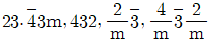
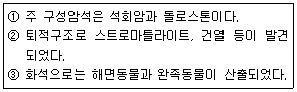
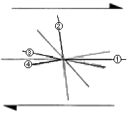
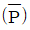
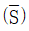
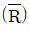
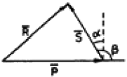
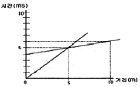
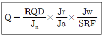
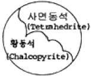

응용지질기사 (2008-03-02 기출문제)
1과목: 암석학 및 광물학
1. 구면 투영에서 c축에 평행한 대원은 스테레오 투영에서는 무엇으로 투영되는가?
- 점
- 호
- 원
- 직선
(정답률: 70%)

2. 다음 중 비소를 함유하지 않은 광물은?
- 황비철석(arsenopyrite)
- 에너자이트(enargite)
- 섬아연석(sphalerite)
- 계관석(realgar)
(정답률: 알수없음)
3. 원자가 전자를 잃어버릴 경우 생성되는 것은?
- 양이온
- 음이온
- 중성자
- 양성자
(정답률: 95%)
4. 다음 광물의 화학결합에 대한 설명 중 틀린 것은?
- 원소들간에 존재하는 결합의 종류는 화합물을 만드는 원자들의 전자구조에 의하여 결정된다.
- 많은 광물들은 한 가지 이상의 방식으로 결합되어 있고 이 경우에 그 광물의 물리적 성질은 가장 강한 결합방식에 의하여 결정된다.
- 원자들은 이온결합, 공유결합, 금속결합 및 판데르 바알스결합에 의하여 서로 결합되어 있다.
- 규산염 광물에 있어서 Si-O 결합은 대략 절반은 이온결합이고 절반은 공유결합이다.
(정답률: 알수없음)
5. 친수성 광물과 소수성 광물을 분리하는 방법은?
- 파쇄 및 분급
- 용리법
- 자력분별법
- 부유선광법
(정답률: 93%)
6. 석영결정이 공명판(진동판)으로 이용되는 것은 다음 중 어느 성질 때문인가?
- 높은 경도
- 패각상 쪼개짐
- 자기적 성질
- 압전기 성질
(정답률: 60%)
7. 정족

는 6점계 중 어디에 속하는가?- 사방정계
- 육방정계
- 정방정계
- 등축정계
(정답률: 42%)
8. 페어다이트(perthite)의 생성을 설명하여 주는 것은?
- 유질동상
- 동질이상
- 고용체
- 용리
(정답률: 84%)
9. X선의 회절을 이용한 광물감정시에 격자의 대칭과 격자상수를 알 수 있는 방법은?
- 바이젠버그(Welssenberg) 방법
- 데바이쉐러(Debye-Scherrer) 사진방법
- 브래그(Bragg)의 회전법
- 부어거-프리세션(Buerger-Precession) 방법
(정답률: 56%)
10. 다음 중 강자성을 보이는 광물은 어느 것인가?
- 자철석
- 티탄철석
- 알만딘
- 흑운모
(정답률: 77%)
11. 다음 암석 중 섬록암과 화학성분이 가장 가까운 화산암은?
- 유문암
- 조면암
- 현무암
- 안산암
(정답률: 73%)
12. 암석의 윤회는 여러 요인에 의해 화성암, 퇴적암, 변성암 및 마그마가 상호 순환하는 것을 말한다. 다음 중 마그마에서 화성암이 형성되는 과정은 어느 것인가?
- 교결작용
- 용융작용
- 결정작용
- 변성작용
(정답률: 54%)
13. 다음 퇴적물에서 관찰할 수 있는 특성 중에서 퇴적물의 운반거리를 예상할 수 있는 것은?
- 호상층리
- 원마도
- 구형도
- 사층리
(정답률: 91%)
14. 석영이 10% 미만이며, 유색광물은 주로 흑운모, 각섬석, 휘석 등이고, 장석은 An50 이상인 회사장석으로 주로 구성된 심성암은?
- 토날라이트(tonalite)
- 반려암(gabbro)
- 섬록암(diorite)
- 몬조니암(monzonite)
(정답률: 77%)
15. 다음 중에서 가장 고압의 변성상 계열은?
- 바로비안 변성상 계열
- 부칸 변성상 계열
- 접촉 변성상 계열
- 프란시스칸 변성상 계열
(정답률: 75%)
16. 석회질 암석내에 석영과 점토광물이 불순물로 포함되어 있을 때, 이 암석의 변성작용을 받으면 새로운 광물들이 생성되면서 기체를 방출한다. 이 때 방출될 수 있는 기체는?
- 오존(O3)
- 아르곤(Ar)
- 메탄(CH4)
- 이산화탄소(CO2)
(정답률: 91%)
17. 아르코스(arkose) 사암은 다른 사암보다 어떤 것을 더 많이 포함하고 있는가?
- 방해석
- 장석
- 운모
- 암편
(정답률: 84%)
18. 어떤 지역의 퇴적암을 조사하여 다음과 같은 내용을 알았다. 이 암석의 퇴적장소는?

- 사막
- 하천
- 호수
- 조간대
(정답률: 91%)
19. 다음 화성암의 화학 성분 중 SiO2의 함량이 증가함에 따라서 함량이 증가하는 성분은?
- MgO
- CaO
- Na2O+K2O
- Fe2O3+FeO
(정답률: 80%)
20. 화성암을 구성하고 있는 조암광물의 크기(입도)는 주로 무엇에 의하여 결정되는가?
- 마그마의 밀도
- 마그마의 온도
- 마그마의 냉각속도
- 마그마의 화학성분
(정답률: 91%)
2과목: 구조지질학
21. 다음은 산사태의 발생 원인에 해당하지 않는 것은?
- 큰 지진으로 인해 발생
- 폭우 등에 의해 지표가 물로 포화되고 불안정화되어 발생
- 인위적인 과도한 절대에 의해 사면이 불안정화 될 경우에 발생
- 해수의 침입에 의해 발생
(정답률: 알수없음)
22. 최대 응력(σ1)이 수직으로, 최소 응력(σ3)이 수평으로 작용할 때 생기는 단층의 형태는?
- 주향이동단층
- 역단층
- 정단층
- 스러스트단층
(정답률: 80%)
23. 단층비탈향사(fault-ramp syncline), 단층굴곡배사(fault-bend anticline), 회전배사(roll-over anticline) 등의 지질구조가 형성되는 곳은?
- 정단층계
- 스러스트단층계
- 주향이동단층계
- 변환단층계
(정답률: 알수없음)
24. 다음 중 호그백(Hogback)에 대한 설명으로 맞는 것은?
- 지층의 경사가 완만한 지역에서 이와 평행한 길고 완만한 경사면의 반대쪽에 발달하는 급경사면
- 지층의 경사가 급한 곳에서 형성되는 양사면이 가파르고 좁은 산릉
- 두 개 이상의 나란한 정단층에 의해서 형성된 단층지괴의 구조
- 수직단층에 의해 형성된 길고 좁은 단층절벽
(정답률: 50%)
25. 규모 7의 지진은 규모 4의 지진보다 얼마나 더 많은 에너지를 방출하는가?
- 약 3배
- 약 30배
- 약 900배
- 약 27,000배
(정답률: 알수없음)
26. 압쇄암대(mylonite zone)의 설명이 아닌 것은?
- 세립질(fine-grained)이다.
- 층상구조가 잘 발달(strongly layered appearance)된다.
- 큰 전단응력에 의해 생성된다.
- 퇴적구조가 잘 보존되어 있다.
(정답률: 56%)
27. 다음 그림은 우수향 단순 전단 운동에 의한 리멜 전단을 표시한 것이다. 이름과 전단 특징이 잘못 짝지워진 것은?

- ①-Y 전단 : 우수향 전단
- ②-공액 리델 (R') 전단 : 좌수향 전단
- ③-리델 (R) 전단 : 우수향 전단
- ④-P 전단 : 좌수향 전단
(정답률: 60%)
28. 음영대(shadow zone)의 직접적인 원인이 되는 지구 내부구조는?
- 외핵
- 내핵
- 맨틀
- 저속도층
(정답률: 63%)
29. 지형 발달 과정에서 원지형(原地形)이 거의 소멸되었으며, 서로 이웃에 있는 골짜기나 유역 사이의 분수령이 둥글게 되어 서서히 고도를 낮추는 단계는?
- 유년기
- 장년기
- 노년기
- 준평원기
(정답률: 59%)
30. 2004년 12월에 발생하여 쓰나미 등 큰 재난을 야기하였던 인도네시아 지진 발생 지역과 가장 유사한 지체구조적 특성을 갖는 곳은?
- 일본
- 히말라야 산맥
- 산안드레아스 단층
- 중앙대서양 산맥
(정답률: 알수없음)
31. 습곡된 면들의 극점(pole)을 투영하여 형성된 대원(great circle)의 극점을 구해 습곡축의 방향을 구하는 방법은?
- 파이 다이아그램(π-diagrm)
- 베타 다이아그램(β--diagrm)
- 모어 다이아그램(mohr-diagrm)
- 블록 다이아그램(Blcok -diagrm)
(정답률: 77%)
32. 이미 존재하고 있는 엽리가 습곡작용을 받아 형성된 엽리는?
- 파랑엽리(crenulation foliation)
- 치아엽리(stylolitic foliation)
- 망상엽리(anastomosing foliation)
- 조면엽리(rough foliation)
(정답률: 79%)
33. 한반도 납부에서의 지자기 편각은 대략 어느 정도인가?
- 서쪽으로 6~8°
- 서쪽으로 10~12°
- 동쪽으로 6~8°
- 동쪽으로 10~12°
(정답률: 92%)
34. 다음 중 지판의 충돌로 인한 수평압축에 의해서 형성된 것으로 볼 수 없는 것은?
- 횡와습곡대
- 냅프(nappe)
- 스러스트 단층대
- 지구대
(정답률: 55%)
35. 수계발달 특성 중 기반암의 지질구조에 의한 것이 아닌 것은?
- 평행 수계(parallel drainage)
- 격자상 수계(trellis drainage)
- 장방형 수계(rectangular drainage)
- 수지상 수계(dendritic drainage)
(정답률: 69%)
36. 고토양(paleosols)을 이용하여 해석할 수 없는 것은?
- 퇴적층의 구분
- 절대연령측정
- 식물의 서식정도 및 기후의 특징
- 침식율
(정답률: 70%)
37. 다음 중 판구조론에서 판의 경계 중 수렴경계에서의 특징으로 볼 수 없는 것은?
- 심한 화산활동
- 심한 지진활동
- 심한 변환단층의 생성
- 심한 판의 충돌
(정답률: 77%)
38. 하도의 폭이 30m, 평균수심이 3m이고 평균유속이 2m/s이다. 이 하천의 유량은 얼마인가?
- 180m3/s
- 45m3/s
- 20m3/s
- 5m3/s
(정답률: 69%)
39. 상부층과 하부층과의 관계가 평행하고 부정합면이 확실하게 나타나는 부정합은?
- 비정합
- 준정합
- 경사부정합
- 난정합
(정답률: 64%)
40. 지질시대를 구분하는 가장 큰 기준이 되는 것은?
- 운석의 충돌
- 생물의 진화과정
- 절대연령 측정값
- 암석의 변성도 차이
(정답률: 80%)
3과목: 탐사공학
41. 반사법 탄성파 탐사 자료에 대하여 수진점의 고도 변화와 표층의 불균질한 특성 때문에 생기는 시간차를 보정해 주는 것은?
- 동보정(Dynamic correction)
- 정보정(Static correction)
- 구조보정(Migration)
- 디멀티플렉스(Demultiplex)
(정답률: 64%)
42. 다음 중 암석의 절대연령 측정법이 아닌 것은?
- K-Ar법
- Rb-Sr법
- U-Pb법
- K-Pb법
(정답률: 82%)
43. 다음 중 얇은 지층의 경계를 가장 명확하게 나타내는 검층법은?
- 노말 전기비저항 검층법
- 전자 검층법
- 지향식 전기비저항 검층법
- 유도분극 검층법
(정답률: 82%)
44. 굴절법 탄성화 탐사에서 음원으로부터 굴절파가 최초로 나타나는 거리를 임계거리라 한다. 제 1층의 탄성파 속도가 0.8km/sec, 제2층의 속도가 2.4km/sec, 제1층의 두께가 12m일 경우 임계거리는 몇 미터인가?
- 2.83m
- 4.24m
- 5.66m
- 8.49m
(정답률: 16%)
45. 다음 중 유도분극(induced polaelzation)현상의 발생 원인이 아닌 것은?
- 과전압(overvoltage)
- 막(membrane)분극
- 전극(electrode)분극
- 자기유도(magnetic induction)
(정답률: 64%)
46. 전기비저항 탐사에서 웨너식 전극배열을 사용하여 전극 간격을 15m로 하여 조사하였을 때 전류 0.2A를 보내서 0.6V의 전위차를 얻었다면 겉보기 전기비저항은 얼마인가?
- 188.4Ω-m
- 282.7Ω-m
- 327.6Ω-m
- 628.5Ω-m
(정답률: 69%)
47. 중력탐사 자료의 보정 중 해머의 도표(Hammer's table)를 이용하여 수행할 수 있는 것은?
- 고도(elevarion) 보정
- 지형(terrain) 보정
- 위도(latitude) 보정
- 조석(earth-tide) 보정
(정답률: 75%)
48. 다음 중 암석의 방사능 측정과 해석에 관한 설명으로 틀린 것은?
- 방사능 측정단위는 큐리(curie)가 사용된다.
- 셰일과 사암의 지층 경계면을 방사능 탐사로 쉽게 파악할 수 있다.
- 일반적으로 화성암이 퇴적암이나 변성암보다 더 강한 방사능을 나타낸다.
- 일반적으로 많이 사용되는 방사능 측정기기는 가이거계수기(Geiger counter)와 신틸레이션 미터(Scintillation meter)이다.
(정답률: 55%)
49. 다음 그림은 전자탐사에 있어서 1차장

과 2차장
및 합성장
을 나타낸 것이다. 위상각이 a, 1차장과 2차장 사이의 각이 β일 때 다음 설명 중 틀린 것은?
- 좋은 전도체는 a가 90°에 가깝고 나쁜 전도체는 a가 0에 가깝다.
- 좋은 전도체는 동상성분이 크나 나쁜 전도체는 동상성분이 0에 가깝다.
- 좋은 전도체는 이상성분이 크나 나쁜 전도체는 이상 성분이 0에 가깝다.
- 나쁜 전도체는 이상성분이 동상성분보다 약간 크게 나타난다.
(정답률: 알수없음)
50. 반사법 탄성파 탐사에서 사용되는 공심점 기법(COP:Common, Depth Point method)에 대한 설명으로 맞는 것은?
- 발파점-수진점 간격을 달리하여 동일한 반사정으로부터 여러 개의 트레이스를 기록하는 것이다.
- 수진점에 기록된 반사파 기록을 굴절파 기록으로 바꾸는 것이다.
- 지층의 두께를 동일하다고 가정하는 해석기법이다.
- 육상 탄성파 탐사에서 사용되며, 해상에서는 적용할 수 없다.
(정답률: 73%)
51. 반사법 탄성파 탐사자료 획득시 흔히 원하지 않는 잡은(noise)리 신호(signal)와 같이 섞여 측정된다. 잡음에는 무작위 잡음(random noise)과 일관성 잡음(coherent noise)이 있다. 무작위 잡음의 경우 독립적으로 측정한 n개의 자료를 합성함으로써 신호대 잡음비(S/N)를 얼마나 향상시킬 수 있는가?
- n1/2배
- n배
- 2n배
- n2배
(정답률: 50%)
52. 지구의 자기장에 의해 페리자성 광물들의 자화방향이 지구자기장 방향으로 정렬되어 자성을 갖는 것을 열잔류자기라 하는데, 다음 중 열잔류자기를 가지는 경우가 많은 암석은?
- 화성암
- 변성암
- 육성기원 퇴적암
- 해성기원 퇴적암
(정답률: 75%)
53. 전자탐사에서 1차장과 2차장이 공간적으로는 서로 수직된 방향을 갖고, 위상이 90°가 아닌 다른 임의의 각만큼 차이를 갖는 경우 발생하는 분극현상은?
- 선분극
- 막분극
- 원분극
- 타원분극
(정답률: 79%)
54. 외부에서 자기장이 가해지면 외부 자기장의 방향과 유사한 자화방향을 가진 자구는 면적이 커지고, 그렇지 않은 자구는 면적이 좁아지는 특성을 보이는 자성체는?
- 강자성체
- 상자성체
- 반자성체
- 페리자성체
(정답률: 82%)
55. 지열탐사에 있어 지열광상의 부존을 확인할 수 있는 매우 유명한 물리탐사 방법이 아닌 것은?
- MT법
- P-파 지연법
- Curiew 정법
- GPR법
(정답률: 알수없음)
56. 전자탐사에서 전자파가 땅속으로 침투하여 전파하면서 크기가 1/e, 즉 37%로 감쇠되는 침투심도를 표피심도(skin depth)라고 한다. 주파수가 100Hz, 지츠의 전기비저항이 10,000Ω-m일 때 표피심도는 약 몇 미터인가?
- 500m
- 5,000m
- 5m
- 50m
(정답률: 알수없음)
57. 지구화학적 원소분류 중 친동원소(chalcophile elements)에 해당하는 것은? (단, Goldschmidt의 분류에 의함)
- Ni.Pt
- As.Zn
- Li.V
- He.Rn
(정답률: 알수없음)
58. 다음과 같은 수평 2층구조의 주시곡선도에 대한 설명으로 옳은 것은?

- 상부층의 속도가 하부층의 속도보다 크다.
- 굴절파가 도달되지 않는 거리는 음원으로부터 5m이다.
- 굴절파가 처음으로 초동으로 나타나는 거리는 5m이다.
- 하부층의 속도는 500m/sec이다.
(정답률: 39%)
59. 전기 비저항 탐사에서 사용되는 배열 방법 중 전류전극간의 간격이 전위전극간의 간격에 비해 매우 크고, 두 전류전극은 탐사측선의 양단에 설치하고, 그 사이에서 전위전극을 이동시키면서 전기 비저항치를 측정하는 배열방식은?
- 웨너 배열
- 슬럼버저 배열
- 3점 배열
- 쌍극자 배열
(정답률: 43%)
60. 지구화학탐사에서는 토양을 기후에 따라 분류할 수 있는데 성숙토양 단면이 잘 발달되며 토양의 성질은 주로 기호와 식생에 의해 결정되는 토양은?
- 성대성 토양(zonal soil)
- 간대성 토양(inteazonal soil)
- 비성대성 토양(azonal soil)
- 잔류 토양(residual soil)
(정답률: 92%)
4과목: 지질공학
61. 정수두 투수시험을 통한 수리전도도의 계산시 필요한 입력자료가 아닌 것은?
- 물의 동점성계수
- 시료의 단면적
- 시료의 깊이
- 측정시간
(정답률: 50%)
62. 다음 중 현지암반의 변형계수를 측정할 수 있는 시험방법이 아닌 것은?
- 수실시험
- 평판재하시험
- 수압파쇄시험
- 공내재하시험
(정답률: 63%)
63. 다음 중 지하수의 추적자 시험에서 추적자(tracer)로 사용할 수 없는 성분은?
- 칼슘
- 염소
- 브롱
- 요드
(정답률: 40%)
64. 다음 중 암석 시험편에 대한 일축압축강도 시험에서 압축강도에 영향을 주는 요인으로 가장 거리가 먼 것은?
- 시험편의 화학성분
- 시험편의 크기
- 가압속도
- 시험편의 형상
(정답률: 84%)
65. RMR에 의한 암반의 분류에서 가장 배점이 높은 요소는?
- 일축압축강도
- 암질지수(ROD)
- 지하수 상태
- 불연속면의 상태
(정답률: 25%)
66. 암반조사결과, 아래와 같이 3개의 절리군과 하나의 불규칙한 절리가 조사되었다. 이 암반의 체적절리계수(Jv, Volumetric joint count)의 값은? (단, 절리 1군은 10m에 절리수 5개, 절리 2군은 5m에 절리수 5개, 절리 3군은 10m에 절리수 20개, 불규칙한 절리는 10m에 절리수는 1개가 측정되었다.)
- 3.0개/m3
- 3.1개/m3
- 3.3개/m3
- 3.6개/m3
(정답률: 42%)
67. 암반 사면에서 평면 파괴가 발생하는 지질 구조적 조건으로 틀린 것은?
- 활동면의 주향은 사면과 대략 ±20°의 범위로 평행하여야 한다.
- 활동면의 경사각의 경사각은 사면의 경사각보다 커야 한다.
- 활동면의 경사각은 활동면의 마찰각보다 커야 한다.
- 활동에 대한 저항력이 거의 없는 해방면이 활동 암괴의 양쪽 경계면에 존재해야 한다.
(정답률: 72%)
68. 포화된 흙에서 중력 배수할 때 공극내에 있는 물은 일정부분만 표출된다. 중력에 의해서 배수되는 물의부피와 전체 흙의 부피와의 비는?
- 비보요율
- 비산출율
- 저류계수
- 투수량계수
(정답률: 알수없음)
69. 레이놀드수(Reynolds Number)에 대한 설명으로 틀린 것은?
- 다시(Darcu) 법칙의 적용 가능 여부를 판단할 수 있다.
- 침투수의 자유수면을 대표하는 선이다.
- 층류와 난류와의 구분에 대한 기준이다.
- 일반적으로 모든 지하수의 레이놀드 수는 1~10 이내이다.
(정답률: 67%)
70. 터널공사시 암반조건에 대한 공학적 성질을 제시해주는 값으로 아래와 같은 Q값을 사용한다. 다음 식에서(Jr/Ja)는 암반의 어떤 성질을 평가하는 요소인가?

- 풍화의 발달상태
- 암괴의 크기
- 전단강도
- 유효응력
(정답률: 알수없음)
71. 다음 중 산사태 및 사면붕괴 문제 해결을 위한 공학적 설계에서 가장 중요하게 다루어져야 하는 것은?
- 일축압축강도
- 탄성계수
- 마찰각
- 탄성파 속도
(정답률: 89%)
72. 다음은 풍화에 따른 암석의 물리적ㆍ역학적 변화를 설명한 것이다. 틀린 것은?
- 풍화작용을 받은 암석의 탄성파 속도는 줄어든다.
- 풍화가 심할수록 영율(young's modules)은 낮아진다.
- 풍화가 진행되면 인장강도는 줄어든다.
- 풍화가 진행되면 투수율이 낮아진다.
(정답률: 84%)
73. 암석의 탄성파 속도에 영향을 미치는 요소에 대한 설명으로 틀린 것은?
- 밀도가 클수록 전파속도가 증가한다.
- 공극률이 증가하면 전파속도는 저하한다.
- 층상 암석에서 층에 평행한 방향의 전파속도가 수직방향의 속도보다 크게 나타난다.
- 암석에 작용하는 구속응력이 증가할수록 전파속도는 감소한다.
(정답률: 40%)
74. 다음 중 슬레이크(slake)와 팽창 현상이 가장 두드러지게 나타나는 암석은?
- 화강암
- 사암
- 이암
- 석회암
(정답률: 알수없음)
75. 경사가 35°인 사면에 단위중량이 2.5g/cm3이고, 한변의 길이가 1.2m인 정육면체의 암석 블록이 놓여있다. 블록의 미끄러짐에 대한 안전율은 얼마인가? (단, 사면과 블록의 마찰각은 45°이고, 점착력은 0이다.)
- 1.29
- 1.43
- 1.52
- 1.74
(정답률: 36%)
76. 어떤 흙의 공시체에 주응력 σ1=4.0kg/cm2, σ3=1.0kg/cm2를 가했을 때 파괴가 일어났다면 전단응력은 얼마나 되겠는가? (단, 파괴 활동면은 수평면과 60°의 각도를 이루었다.)
- 1.30kg/cm2
- 1.75kg/cm2
- 3.15kg/cm2
- 3.50kg/cm2
(정답률: 47%)
77. 폭 100m, 두께 10m인 대수층을 통해 0.01m3/s의 물이 유출된다. 수평거리 1km 지점의 지하수위가 20m 하강하는 경우 대수층의 투수량계수는 얼마인가?
- 5×10-3m2/s
- 5×10-4m2/s
- 2×10-3m2/s
- 2×10-4m2/s
(정답률: 30%)
78. 암석의 삼축압축시험에서 봉압(Confined Pressure)이 증가할 때 나타나는 현상으로 틀린 것은?
- 변형률 경화현상이 발생된다.
- 최대강도가 증가한다.
- 전형적인 연성거동에서 취성거동으로 전이현상이 일어난다.
- 변형률속도의 증가율이 크게 된다.
(정답률: 74%)
79. 기초 암반에 대한 지질조사를 실시하는 경우 이전의 문헌자료 등을 이용하여 예비조사를 하게 되는데 예비조사 항목으로 적당하지 않은 것은?
- 대규모 단층이나 파쇄대의 유무
- 광범위한 풍화층 분포의 유무
- 기반암의 변형계수
- 대규모의 산사태 발생 유무
(정답률: 50%)
80. 다음 주입공법에 사용되는 약액 중 용수대책 등 순간적인 고결이 요구되는 장소에 가장 효과적인 것은?
- 시멘트계
- 점토계
- 물유리계
- 우레탄계
(정답률: 84%)
5과목: 광상학
81. 광상 형성의 진행 과정에 따라 정마그마 광상을 구분할 때 속하지 않는 것은?
- 분결분상광상
- 분경농집광상
- 분결주입광상
- 분결분화광상
(정답률: 20%)
82. 다음 현미경 사진의 광석 조직에서 관찰되는 현상은?

- 변질작용
- 변성작용
- 분화작용
- 교대작용
(정답률: 47%)
83. 다음 중 광상의 성인해석에 활용되는 안정동위원소가 아닌 것은?
- 수소
- 질소
- 황
- 탄소
(정답률: 39%)
84. 다음 중 충진(filling)작용의 증거가 아닌 것은?
- 정통과 공동
- 대칭적 호상구조
- 교질상 구조
- 모광물속으로 난 요곡면
(정답률: 65%)
85. 탈탄륨(Ta), 리튬(Li), 베릴륨(Be) 등의 회원소 광물이 집중하는 광상은 다음 중 어느 것인가?
- 화성광상
- 페그마타이트광상
- 열수광상
- 변성광상
(정답률: 50%)
86. 다음 중 광화유체로부터 광석광물의 침전이 일어나는 경우가 아닌 것은?
- 광화유체와 모암과의 화학반응
- 광화유체의 동화작용
- 온도ㆍ압력의 변화
- 유체간의 혼합
(정답률: 47%)
87. 남아프리카의 부슈벨드 화성복합체(Bushveld lgnecus Complex)에서 가장 많이 산출되는 원소는?
- 니켈
- 크롬
- 금
- 구리
(정답률: 43%)
88. 국내 부존량이 가장 풍부한 비금속 광물 자원은 고령토이다. 우리나라 고령토 광상의 산출형태와 거리가 가장 먼 것은?
- 페그마타이트광상
- 퇴적광상
- 풍화잔류광상
- 열수광상
(정답률: 50%)
89. Ca, Mg 또는 Mn 탄삼염 광물들로 구성된 ㅗ임이 실리카, 알루미나, 철 등이 부가되어 반응을 일으켜 칼슘, 마그네슘, 알루미늄, 철 등의 규산염광물집합체로 변질된 현상을 무엇이라 하는가?
- 주석화
- 프로필라이트화
- 규화
- 스카른화
(정답률: 30%)
90. 광상의 생성에 관계되는 공극 중 일차적 공극에 해당하는 것은?
- 용해작용에 의한 공극
- 결정작용에 의해 생긴 공극
- 수축작용에 의해 생긴 공극
- 다공질 공극
(정답률: 알수없음)
91. 시멘트, 용광로의 용재, 칼슘카바이드 제조에 사용되는 광물은?
- 석면
- 점토광물
- 방해석
- 석영
(정답률: 37%)
92. 반암 등 광상의 변질대는 일반적으로 공간적 대상 분포를 보여준다. 광상의 가장 중심부에 위치하는 변질대부터 차례대로 나열한 것은?
- 칼륨(potassium feldspar) 변질대-필릭(phyllic) 변질대-프로필라이트(propylite) 변질대
- 필릭(phyllic) 변질대-프로필라이트(propylite) 변질대-칼륨(potassium feldspar) 변질대
- 프로필라이트(propylite) 변질대-칼륨(potassium feldspar) 변질대-필릭(phyllic) 변질대
- 필릭(phyllic) 변질대-칼륨(potassium feldspar) 변질대-프로필라이트(propylite) 변질대
(정답률: 알수없음)
93. 다음 중 열수광상에서의 모암변질작용에 해당하지 않는 것은?
- 녹니석화작용
- 견운모화작용
- 규화작용
- 주석화작용
(정답률: 30%)
94. 다음 중 퇴적광상의 특징이 아닌 것은?
- 층상(성층)광체로 흔히 산출된다.
- 화석을 포함하기도 한다.
- 대체로 광상규모가 크며 모양의 층리와 정합적이다.
- 액상광맥이 흔히 관찰된다.
(정답률: 59%)
95. 국내 활석광상 중 일반적으로 양질의 활석을 생산하는 광상의 모양은?
- 녹니석편암
- 돌로마이트
- 사문암
- 석회암
(정답률: 25%)
96. 각력암 등 파쇄암의 공통 내에서 열수 광화작용이 일어날 경우 모양편이 방사상의 광물 결정들에 의하여 피복되어 나타나는 구조는?
- 교질상 구조
- 빗 구조
- 포획 구조
- 칵케이트 구조
(정답률: 50%)
97. 다음 중 한국형 금광상은 어느 것에 해당하는가?
- 최천열수형 광상
- 천열수형 광상
- 중-심열수형 광상
- 기성 광상
(정답률: 30%)
98. 곳산(gossan)과 가장 관계 깊은 광상은?
- 반암동광상
- 풍화잔류광상
- 표성부화광상
- 접촉교대광상
(정답률: 20%)
99. 흑연 광상에서 양질(良質)의 광석 조건으로 틀린 것은?
- 회분이 적은 것
- 내화도가 강한 것
- 철 및 알칼리 광물을 갖지 않는 것
- 결정편이 작은 것
(정답률: 65%)
100. 다음 중 주로 속성작용에 의해 형성된 비금속광물자원은?
- 장석
- 활석
- 벤토나이트
- 납석
(정답률: 60%)